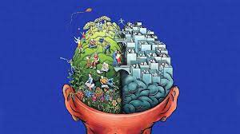

Mental Health: Importance
What is mental health?
Mental health refers to cognitive, behavioral and emotional wellbeing. It is all about how people think, feel and behave.
Mental Health
It is a state of wellbeing in which an indivisual realizes his or her own ablities, can cope with normal stresses of life, can work productively & is able to make a contribution to his or her community.
Importance
Looking after mental health can preserve a person's ability to enjoy life. Doing this involves reaching a balance between life activities, responsibilities and efforts to achieve psychological resilience.
Conditions such as stress, depression and anxiety can all affect mental health and disrupt a person's routine.